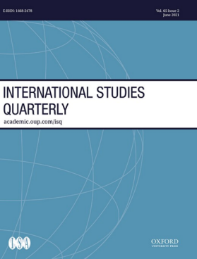
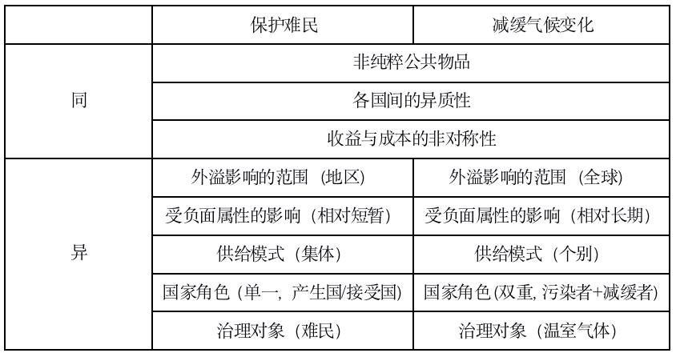
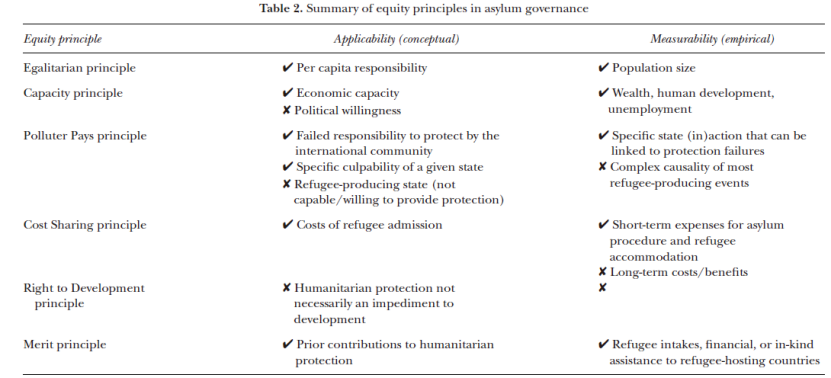
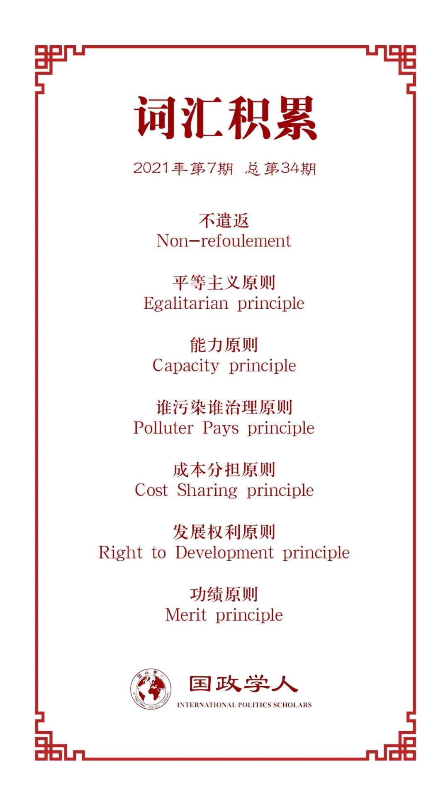

收录于合集

作者简介
【作者】 Philipp Lutz, 日内瓦大学政治科学与国际关系系博士后研究员；Anna Stünzi，波茨坦气候影响研究院博士后研究员；Stefan Manser-Egl，纳沙泰尔大学博士研究员。
【编译】 张鸿儒（国政学人编译员，山东大学英语与国际政治专业）
【校对】 晋玉、朱家羲
【审核】 丁伟航
【排版】 林祉欣
【美编】 李九阳
【来源】 Lutz, P., Stünzi, A., & Manser-Egli, S. (2021). Responsibility- Sharing in Refugee Protection: Lessons from Climate Governance. International Studies Quarterly , 65(2), 476-487.
【归档】 《国际关系前沿》2021年第7期，总第34期。
期刊简介

《国际研究季刊》（ International Studies Quarterly ）是国际研究协会的旗舰期刊，由牛津大学出版社每年发行四期，旨在发表与国际研究中重要理论性、实证性、规范性主题相关的领先学术成果。根据Journal Citation Reports的数据，2019年该期刊的影响因子为2.146。
难民保护中的责任分担：来自气候治理的启示
Responsibility-Sharing in Refugee Protection: Lessons from Climate Governance
Tatiana Carayannis
Anna Stünzi
Stefan Manser-Egl
内容提要
难民问题[1]的国际治理需要各国合作提供“人道主义保护”这一公共产品(public good)，其中的责任分担问题与减缓气候变化中的集体行动问题有着相似之处。尽管各国在大多数环境协定中已就区别的国家责任形成了总体的共识，但在难民治理中的责任分担上，各方并未达成一致意见。本文比较了气候治理与难民治理所面临的集体行动挑战，以及二者作为公共产品的相同与不同之处。随后本文讨论了气候治理中存在的“共同但有区别的责任”原则(the principle of “common but differentiated responsibilities”)，以及在人道主义保护的背景下公正(equity)原则可以如何被应用至有区别的国家责任之中。最后，本文指出，在设计难民保护的责任分配机制过程中存在着多种权衡。
文章导读
01
导言
难民的接纳问题已经成为国际政治的一个主要挑战。 西方国家的难民政策存在着这样一个悖论：各国承诺为难民提供保护，但不愿意向难民开放本国的边境。 这一悖论实际可理解为国家就难民保护合作而产生的集体行动问题。事实上，国际法中的“不驱回(non- refoulement)原则”是当前难民保护中唯一一条有强制力的规定。进而，地理位置与难民的自我迁移成为决定各国保护责任的最主要因素。这些因素不仅仅加剧了责任的不平等分配，也不利于难民的有效保护。要解决这些问题，需要以一种公平公正的方式分配各国保护难民的责任。 本文则借用气候治理的相关概念，以具体评估难民治理中国家间责任分配的标准，力图填补抽象法律规范与实际执行间存在的研究空白。
02
难民保护与减缓气候变化：共同但有区 别的挑战
在难民保护领域，存在着国家间合作的集体行动问题：提供难民保护这一公共产品的成本仅仅为个别国家所承担，而收益却为所有国家所享受。在此方面，气候治理与之存在有一定相似之处。二者均具备一些公共产品的重要特征，如各国都有“搭便车”的动机、都需要避免共同的负面属性（common bad）等。表1为对减缓气候变化与保护难民二种国际公共产品相同与不同之处的大致比较。
表1：减缓气候变化与保护难民二种国际公共产品的比较

通过以上的比较，可以发现 难民治理与气候治理均面临着各国集体行动的挑战，但作为公共产品二者又有所不同。
03
减缓气候变化中的责任分担
公正的考量与责任分担机制从一开始便在各国关于应对气候变化的协商中发挥着重要作用。1992年《联合国气候变化框架公约》便规定了气候治理中“共同但有区别的责任”原则。如何把这一原则具体落实？下文讨论了在（收益和成本）呈非对称特征的国家间分配气候治理责任的六个公正相关的重要原则。
其一， 平等主义原则（Egalitarian principle） ，即全球层面按人头平等地分担责任。这一原则理论上简单，但实际执行方案并不明确。例如：过去和将来的人口是否应被计算在内？
其二， 能力原则（Capacity principle） ，即一国的经济能力决定其承担责任的多少。这一原则实际与第三类原则密切相关。
第三， 谁污染谁治理（Polluter Pays principle）原则 ，即指一国的实际排放量决定其承担的责任。
其四， 成本分担原则(Cost Sharing principle) ，即减排成本更低的国家应承担更多的责任。例如在欧盟排放交易体系，鉴于高排放行业减排一般会更困难，因此这些行业会收到更多的补助。
其五， 发展权利原则(Right to Development principle) 。这一原则强调需求的优先性，进而对发展中国家而言，首先要消除贫困，之后再进行减排工作。
其六， 功绩原则(Merit principle) ，即根据各国先前的贡献来分配责任。之前减排的越多，现在需要承担的责任就越小。
可以发现，各国政府对公正原则存在着不同的偏好。《京都议定书》的最终失败与《巴黎协定》的成功签署，一定程度上可以说明坚持与再解释“共同但有区别的责任”原则推动了各国在减缓气候变化上的合作。
04
“共同但有区别的责任”原则：从气候到难民
本部分将探讨一个问题： 在概念和实证两个层次，气候治理领域的上述六个公正原则是否适用于难民治理领域？下文将对各个原则进行逐一考察，总体如表2所示：
表2 难民治理中的公平原则概述

平等主义原则：按照这一原则，各国间责任的分配为各国人口规模的函数。这一可操作化概念上可行，实证上易衡量。
能力原则：根据这一原则，各国保护难民的经济能力决定了责任的分配。这一能力可被衡量为一国拥有的财富和人类发展水平。具体而言，是该国容纳难民并为其提供经济机会的能力，如人均GDP、人口密度、失业率等。部分学者将“文化和谐”也纳入能力的衡量范畴，即一国接纳难民的意愿，这增加了衡量的难度。因而，如果仅仅关注经济能力，能力原则既可行亦可衡量。
谁污染谁治理原则反映在难民治理领域， 即 为对 难民产生负有直接责任的国家应首先承担责任 。但这些未能为其民众提供保护的国家很明显无法承担起保护难民的责任。从更宏观的角度来看，如果每个国家没有阻止人道主义危机的产生，那么每个国家都是“污染者”。此外，一个国家过往的政策也可能会塑造其保护难民的责任，如一国对另一国曾实行的殖民统治。难民产生的复杂原因及过往历史使得责任的分配很难具体衡量。因而，谁污染谁治理这一原则从狭义的角度出发不可行，从广义的角度出发难以衡量。
成本分担原则强调每个国家应承担相同的难民治理（人均）成本，换言之，治理成本较低的国家应承担更多的责任。就成本这一概念的衡量而言，短期的经济成本容易衡量，而长期的经济、政治或社会成本衡量起来就较为困难。
发展权利原则强调保护难民责任的分配不应影响难民接收国的发展前景。这一观点仅仅考虑了难民对接收国的效用，且没用考虑影响的短期及长期之分。总体而言，发展权利这一原则在难民治理领域并不完全适用。
功绩原则关注各国先前对人道保护的贡献，不管这些贡献是自愿的还是被迫的，是积极主动的还是预防性的。因而，功绩原则适用于难民保护责任的分配，但其衡量存在多个标准。
可以发现， 气候治理的部分原则在难民治理领域依然适用，不过不同原则的选择与组合会产生不同的结果，进而在设计保护难民的责任分担机制时，会产生一些权衡。 如何区分各国的责任，国际社会面临着困难的政治选择。
05
难民治理：“共同但有区别的责任”原则的启示
本部分将具体探讨两个案例：欧盟用来计算各国应分担的难民数量的“分配密钥”(distribution key)和联合国推动达成的《全球难民契约》(Global Compact on refugees)。
2015年难民危机期间，“分配密钥”这一临时性方案在欧盟得到了广泛的政治支持。该密钥是一个由四个变量组成的公式，其中各个变量被赋予不同的权重：人口数量（占40%），GDP（占40%），过去五年收到的人均避难申请数量（占10%）以及该国的失业水平（占10%）。通过赋予长期更稳定的变量以更大的权重，这一密钥能够提供高度的可预测性，反映出了“共同但有区别的责任”原则背后的主要思想。在实际运行中，各国遵守这一方案的程度大不相同，其中东欧国家对方案的强制性表示反对。至今欧洲并未建立起长期有效的成员国间难民保护责任分配的方案。
在全球层面，有效的责任分担工具也未得以确立。在设计一个可操作化的责任分担机制上，最雄心勃勃的尝试为2018年联合国大会通过的《全球难民契约》。不过为使各国能够接受，这一契约不具有强制性，其实际效用如何仍有待评估。
上述两个案例反映的是两种不同的国际责任分担方式：欧盟“分配密钥”是有约束力的工具（硬法,hard law），是一种自上而下的模式；《全球难民契约》是非强制性的工具（软法,soft law），是一种自下而上的模式。这两种不同的方式在气候治理领域也有着反映：前者对应着《京都议定书》，后者对应着《巴黎协定》。
可以发现， 近期在气候治理和难民治理领域取得的进展（《巴黎协定》、《全球难民契约》）是建立在“共同但有区别的责任”原则的基础上，其中责任的具体履行为自下而上的灵活承诺。
06
小结
本文发现，环境治理中的“共同但有区别的责任”原则概念上适用于难民保护领域，这是因为二者均面临着相似的集体行动问题，以及在提供公共产品上国家间的不对称性。本文讨论了气候治理中六条与公正相关的原则，发现其中部分原则在难民治理领域概念上适用、实证上可量化。
本文有以下启示： 其一，责任分担需要各国意识到人道主义保护是共同的责任，责任的分配标准应被认为是公平公正的；其二，责任分配机制的设计包含一系列的重要权衡 ，包括强制性与承诺的可能性(Enforceability versus likelihood of commitment)、可预测性与灵活性(Predictability versus flexibility)、特殊性与包容性(Specificity versus inclusiveness)。唯有在这些方面取得恰当的平衡，才有可能建立起成功的责任分担机制。
译者评述
本文从公共产品理论的视角出发，分析比较了气候治理与难民治理的异同之处，总结了气候治理中对“共同但有区别的责任”原则的六种不同理解及其衡量标准，并在难民治理领域对这些具体原则进行了概念可行性及实证可操作性的检验。最后，本文提出了建立起成功的责任分担机制需要处理好的几对关系。
本文作者点出了难民治理的独特特征： 难民群体自身的能动性、各国在承担成本和享受收益上的不对称性等。 这些特征决定了在难民治理中不能照搬气候治理的相关经验，而是要根据难民治理自身的情况进行设计。
在全球治理领域有硬性规则与软性规范之分，前者具有约束力，但有较大可能遭到部分国家的反对，后者不具约束力，更容易得到各国的认可，但实际效果如何存在较大的不确定性。如何处理好二者关系是难民治理乃至全球治理实效的重要影响因素。
译者认为，本文在以下几个方面略有不足。第一，难民问题的产生离不开所处的政治、经济及社会背景，如果我们仅仅从概念和可操作化上判断某一原则是否可行，显然有过度理想化之嫌。例如，美欧对叙利亚内战的干涉是2015年欧洲难民危机产生的重要原因[2]，如果未对这一因素给予足够的重视而谈难民治理，终究会是治标不治本。第二，本文的实证分析似乎更多停留在表面，缺乏更加深入的数据或案例支持。此外，责任分担机制的设计离不开国际组织的参与，因而以国际组织为中心的研究视角可以成为难民治理研究的一个新的方向（如对联合国难民事务高级专员署的相关研究）[3]。
参考文献
[1]本文与难民有关词汇为asylum（可译为避难）与refugee（可译为难民），为了全文阅读的连贯性，本文将两者均统一意译为“难民”。
[2]宋全成：《欧洲难民危机:结构、成因及影响分析》，载《德国研究》，2015年第,3期，第41~53页与第126页。
[3]Niamh Kinchin. “A “Supportive and Catalytic” Supervisor? UNHCR’s Role in the Global Compact for Refugees.” Refugee Survey Quarterly 40.1 (2021): 30-57.
词汇整理

文章观点不代表本平台观点，本平台评译分享的文章均出于专业学习之用, 不以任何盈利为目的，内容主要呈现对原文的介绍，原文内容请通过各高校购买的数据库自行下载。
好好学习，天天“在看”

国政学人
支持学术公益与知识传播
微信扫一扫赞赏作者 __赞赏
已喜欢，对作者说句悄悄话
取消 __
发送给作者
发送
最多40字，当前共字
上一页 1/3 下一页
长按二维码向我转账
支持学术公益与知识传播
受苹果公司新规定影响，微信 iOS 版的赞赏功能被关闭，可通过二维码转账支持公众号。